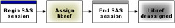
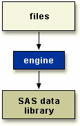
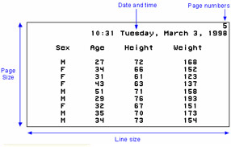
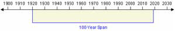

Overview
Introduction
When you begin a SAS session, it's often convenient to set up your environment first. For example, you might want to
- define libraries that contain the SAS data sets that you intend to us
- set features of your SAS listings, such as whether the date and time appear
- specify how two-digit year values should be interpreted
Objectives
In this chapter, you learn to
- define new libraries by using programming statements
- reference SAS files to be used during your SAS session
- set system options to determine how date values are read and to control the appearance of listing output that is created during your SAS session
Referencing Files
SAS Libraries
In the previous chapter, you learned that SAS files are stored in SAS libraries. By default, SAS defines several libraries for you:
- Sashelp is a permanent library that contains sample data and other files that control how SAS works at your site. This is a read-only library
- Sasuser is a permanent library that contains SAS files in the Profile catalog that store your personal settings. This is also a convenient place to store your own files
- Work is a temporary library for files that do not need to be saved from session to session
You can also define additional libraries. In fact, often the first step in setting up your SAS session is to define the libraries.
To define a library, you assign a library name (a libref) to it and specify a path, such as a directory path. You will use the libref as the first part of the file's two-level name (libref.filename) to reference the file within the library. You can use programming statements to assign library names.
Assigning Librefs
To define libraries, you can use a LIBNAME statement. You can store the LIBNAME statement with any SAS program so that the SAS data library is assigned each time the program is submitted.
General form, basic LIBNAME statement:
LIBNAME libref 'SAS-data-library';
where
- libref is 1 to 8 characters long, begins with a letter or underscore, and contains only letters, numbers, or underscores
- SAS-data-library is the name of a SAS data library in which SAS data files are stored. The specification of the physical name of the library differs by operating environment
The LIBNAME statement below assigns the libref Clinic to the SAS data library D:\Users\Qtr\Reports in the Windows environment.
libname clinic 'd:\users\qtr\reports';
The table below gives examples of physical names for SAS data libraries in various operating environments.
| Environment | Sample Physical Name |
|---|---|
| Windows | c:\fitness\data |
| UNIX | /users/april/fitness/sasdata |
| OpenVMS | dua0:[april.fitness] |
| CMS | b |
| z/OS (OS/390) | april.fitness.sasdata |
| Note | The code examples in this exam guide are shown in the Windows operating environment. If you are running SAS within another operating environment, then the platform-specific names and locations will look different. Otherwise, SAS programming code will be the same across operating environments. |
|---|
You can use multiple LIBNAME statements to assign as many librefs as needed.
Verifying Librefs
After assigning a libref, it is a good idea to check the Log window to verify that the libref has been assigned successfully.
SAS Log
17 libname clinic 'd:\users\qtr\reports';
NOTE: Libref CLINIC was successfully assigned as follows:
Engine: V9
Physical Name: d:\users\qtr\reports
How Long Librefs Remain in Effect
The LIBNAME statement is global, which means that the librefs remain in effect until you modify them, cancel them, or end your SAS session.
Therefore, the LIBNAME statement assigns the libref for the current SAS session only. Each time you begin a SAS session, you must assign a libref to each permanent SAS data library that contains files that you want to access in that session. (Remember that Work is the default libref for a temporary SAS data library.)
When you end your SAS session or delete a libref, SAS no longer has access to the files in the library. However, the contents of the library still exist on your operating system.
Specifying Two-Level Names
After you assign a libref, you specify the libref as the first element in the two-level name for a SAS file.
For example, in order for the PRINT procedure to read Clinic.Admit, you specify the two-level name of the file as follows:
proc print data=clinic.admit; run;
Other Formats
You can use the LIBNAME statement to reference not only SAS files but also files that were created with other software products, such as database management systems.
SAS can read or write these files by using the appropriate engine for that file type. Depending on your operating environment and on the SAS/ACCESS products that you license, you can create libraries with various engines. Each engine enables you to read a different file format, including file formats from other software vendors.
For some file types, you need to tell SAS which engine to use. For others, SAS automatically chooses the appropriate engine.
A SAS engine is a set of internal instructions that SAS uses for writing to and reading from files in a SAS library.
Specifying Engines
To indicate which engine to use, you specify the engine name in the LIBNAME statement, as shown below.
General form, LIBNAME statement for files in other formats:
LIBNAME libref engine 'SAS-data-library';
where
- libref is 1 to 8 characters long, begins with a letter or underscore, and contains only letters, numbers, or underscores
- engine is the name of a library engine that is supported in your operating environment
- SAS-data-library is the name of a SAS library in which SAS data files are stored. The specification of the physical name of the library differs by operating environment
Interface Library Engines
Interface library engines support read-only access to BMDP, OSIRIS, and SPSS files. With these engines, the physical filename that is associated with a libref is an actual filename, not a SAS library. This is an exception to the rules for librefs.
For example, the LIBNAME statement below specifies the libref Rptdata and the engine SPSS for the file G:\Myspss.dat in the Windows operating environment.
libname rptdata spss 'g:\myspss.dat';
For more information about interface library engines, see the SAS documentation for your operating environment.
SAS/ACCESS Engines
If your site licenses SAS/ACCESS software, then you can use the LIBNAME statement to access data that is stored in a DBMS file. The types of data that you can access depend on your operating environment and on which SAS/ACCESS products you have licensed.
| Relational Databases | Nonrelational Files | PC Files |
|---|---|---|
| ORACLE | ADABAS | Excel (.xls) |
| SYBASE | IMS/DL-I | Lotus (.wkn) |
| Informix | CA-IDMS | DBF |
| DB2 for z/OS (OS/390) | SYSTEM 2000 | DIF |
| DB2 for UNIX and PC | ||
| Oracle Rdb | ||
| ODBC | ||
| CA-OpenIngres |
Viewing the Contents of SAS Libraries
The CONTENTS Procedure
You've learned how to use SAS windows to view the contents of a SAS library or of a SAS file. Alternatively, you can use the CONTENTS procedure to create SAS output that describes either of the following:
- the contents of a library
- the descriptor information for an individual SAS data set
General form, basic PROC CONTENTS step:
PROC CONTENTS DATA=libref._ALL_ NODETAILS;
RUN;
where
- libref is the libref that has been assigned to the SAS library
- _ALL_ requests a listing of all files in the library. Use a period (.) to append _ALL_ to the libref
- NODETAILS (NODS) suppresses the printing of detailed information about each file when you specify _ALL_. You can specify NODS only when you specify _ALL_
Example
To view the contents of the Mylib library, submit the following PROC CONTENTS step:
proc contents data=mylib._all_ nods; run;
The output from this step lists only the names, types, sizes, and modification dates for the SAS files in the Mylib library.
| ----- Directory ----- | |
|---|---|
| Libref: | MYLIB |
| Engine: | V8 |
| Physical Name: | C:\WINNT\Profiles\Personal\My SAS Files\V8 |
| File Name: | C:\WINNT\Profiles\Personal\My SAS Files\V8 |
| # | Name | Memtype | File Size | Last Modified |
|---|---|---|---|---|
| 1 | ADMIT | DATA | 9216 | 23JUN2000:16:30:38 |
| 2 | ADMITJUNE | DATA | 9216 | 23JUN2000:16:30:38 |
| 3 | COMPANY | DATA | 5120 | 23JUN2000:16:30:38 |
| 4 | CREDIT | DATA | 5120 | 23JUN2000:16:30:38 |
| 5 | CUSTDET1 | DATA | 33792 | 04MAY2000:13:45:49 |
| 6 | DIABETES | DATA | 9216 | 23JUN2000:16:30:38 |
| 7 | DMDATA | CATALOG | 21504 | 04MAY2000:13:59:19 |
To view the descriptor information for the Mylib.Admit data set, you can submit the following PROC CONTENTS step:
proc contents data=mylib.admit; run;
The output from this step lists information for Mylib.Admit, including an alphabetic list of the variables in the data set.
| Data Set Name | MYLIB.ADMIT | Observations | 21 |
|---|---|---|---|
| Member Type | V8 | Variables | 9 |
| Engine | V8 | Indexes | 0 |
| Created | 15:05 Thursday, July 17, 2003 | Observation Length | 64 |
| Last Modified | 15:05 Thursday, July 17, 2003 | Deleted Observations | 0 |
| Protection | Compressed | NO | |
| Data Set Type | Sorted | NO | |
| Label |
| Engine/Host Dependent Information | |
|---|---|
| Data Set Page Size | 8192 |
| Number of Data Set Pages | 1 |
| First Data Page | 1 |
| Max Obs per Page | 127 |
| Obs in First Data Page | 21 |
| Number of Data Set Repairs | 0 |
| File Name | C:\WINNT\Profiles\Personal\My SAS Files\V8\admit.sas7bdat |
| Release Created | 8.0202M0 |
| Host Created | XP_PRO |
| Alphabetic List of Variables and Attributes | ||||
|---|---|---|---|---|
| # | Variable | Type | Len | Format |
| 8 | ActLevel | Char | 4 | |
| 4 | Age | Num | 8 | |
| 5 | Date | Num | 8 | |
| 9 | Fee | Num | 8 | 7.2 |
| 6 | Height | Num | 8 | |
| 1 | ID | Char | 4 | |
| 2 | Name | Char | 14 | |
| 3 | Sex | Char | 1 | |
| 7 | Weight | Num | 8 | |
The DATASETS Procedure
In addition to PROC CONTENTS, you can also use PROC DATASETS with the CONTENTS statement to view the contents of a SAS library or a SAS data set.
General form, PROC DATASETS step with CONTENTS statement:
PROC DATASETS; CONTENTS DATA=libref._ALL_ NODETAILS; QUIT;
where
- CONTENTS describes the contents of one or more SAS data sets and prints the directory of the SAS data library
- libref is the libref that has been assigned to the SAS data library
- _ALL_ requests a listing of all files in the library. Use a period (.) to append _ALL_ to the libref
- NODETAILS (NODS) suppresses the printing of detailed information about each file when you specify _ALL_. You can specify NODS only when you specify _ALL_
For example, the following PROC steps produce essentially the same output (with minor formatting differences):
proc datasets;
contents data=sasuser._all_ nods;
quit;
proc contents data=sasuser._all_ nods;
run;
The major difference between the CONTENTS procedure and the CONTENTS statement in PROC DATASETS is the default for libref in the DATA= option. For PROC CONTENTS, the default is either Work or User. For the CONTENTS statement, the default is the libref of the procedure input library. Notice also that PROC DATASETS is an interactive procedure that requires a QUIT statement rather than a RUN statement.
| Note | In addition to the CONTENTS statement, PROC DATASETS also uses several other statements. These statements enable you to perform tasks that PROC CONTENTS does not perform. For more information about PROC DATASETS, see the SAS documentation for your operating environment |
|---|
Viewing Descriptor Information for a SAS Data Set
As with PROC CONTENTS, you can also use PROC DATASETS to display the descriptor information for a specific SAS data set.
By default, PROC CONTENTS and PROC DATASETS list variables alphabetically. To list variable names in the order of their logical position (or creation order) in the data set, you can specify the VARNUM option in PROC CONTENTS or in the CONTENTS statement in PROC DATASETS.
For example, either of these programs creates output that includes the list of variables shown below:
proc datasets;
contents data=sasuser.admit varnum;
quit;
proc contents data=sasuser.admit varnum;
run;
| Variables in Creation Order | ||||
|---|---|---|---|---|
| # | Variable | Type | Len | Format |
| 1 | ID | Char | 4 | |
| 2 | Name | Char | 14 | |
| 3 | Sex | Char | 1 | |
| 4 | Age | Num | 8 | 1 |
| 5 | Date | Num | 8 | |
| 6 | Height | Num | 8 | |
| 7 | Weight | Num | 8 | |
| 8 | ActLevel | Char | 4 | |
| 9 | Fee | Num | 8 | 7.2 |
Setting SAS System Options
SAS Output
Next, let's consider the appearance and format of your SAS output. You can specify result formats to create your output as
- an HTML document
- a listing (traditional SAS output)
- both of the above
You can create HTML output by using programming statements on any SAS platform. In addition, in desktop operating environments, you can use windows to specify result formats. You can learn more about how to create HTML output in Chapter, Producing HTML Output.
If you create your procedure output as a SAS listing, you can also control the appearance of your output by setting system options such as
- line size (the maximum width of the log and output)
- page size (the number of lines per printed page of output)
- the display of page numbers
- the display of date and time
Note The above options do not affect the appearance of HTML output.
All SAS system options have default settings that are used unless you specify otherwise. For example, page numbers are automatically displayed (unless your site modifies this default).
To modify system options, you submit an OPTIONS statement. You can place an OPTIONS statement anywhere in a SAS program to change the settings from that point onward. However, it is good programming practice to place OPTIONS statements outside of DATA or PROC steps so that your programs are easier to read and debug.
| Note | Because the OPTIONS statement is global, the settings remain in effect until you modify them, or until you end your SAS session. |
|---|
General form, OPTIONS statement:
OPTIONS options;
where options specifies one or more system options to be changed. The available system options depend on your host operating system.Example: NUMBER | NONUMBER and DATE | NODATE Options
By default, page numbers and dates appear with output. The following OPTIONS statement suppresses the printing of both page numbers and the date and time in listing output.
options nonumber nodate;
In the following example, page numbers and the current date are not displayed in the PROC PRINT output. Page numbers are not displayed in the PROC FREQ output, either, but the date does appear at the top of the page that contains the PROC FREQ report.
options nonumber nodate;
proc print data=clinic.admit;
var id sex age height weight;
where age>=30;
run;
options date;
proc freq data=clinic.diabetes;
where fastgluc>=300;
tables sex;
run;
| The SAS Sytem | |||||
| Obs | ID | Sex | Age | Height | Weight |
| 2 | 2462 | F | 34 | 66 | 152 |
| 3 | 2501 | F | 31 | 61 | 123 |
| 4 | 2523 | F | 43 | 63 | 137 |
| 5 | 2539 | M | 51 | 71 | 158 |
| 7 | 2552 | F | 32 | 67 | 151 |
| 8 | 2555 | M | 35 | 70 | 173 |
| 9 | 2563 | M | 34 | 73 | 154 |
| 10 | 2568 | F | 49 | 64 | 172 |
| 11 | 2571 | F | 44 | 66 | 140 |
| 13 | 2574 | M | 30 | 69 | 147 |
| 14 | 2575 | F | 40 | 69 | 163 |
| 15 | 2578 | M | 47 | 72 | 173 |
| 16 | 2579 | M | 60 | 71 | 191 |
| 17 | 2584 | F | 43 | 65 | 123 |
| 20 | 2589 | F | 41 | 67 | 141 |
| 21 | 2595 | M | 54 | 71 | 183 |
| The SAS System | ||||
| 15:19 Thursday, September 23, 1999 | ||||
| Sex | Frequency | Percent | Cumulative Frequency | Cumulative Percent |
| F | 2 | 25.0 | 2 | 25.0 |
| M | 6 | 75.0 | 8 | 100.0 |
Example: PAGENO= Option
If you print page numbers, you can specify the beginning page number for your report by using the PAGENO= option. If you don't specify the PAGENO= option, output is numbered sequentially throughout your SAS session, starting with page 1.
In the following example, the output pages are numbered sequentially throughout the SAS session, beginning with number 3.
options nodate pageno=3; proc print data=hrd.funddrv; run;
| The SAS System | 3 | ||||
| Obs | Lastname | Qtr1 | Qtr2 | Qtr3 | Qtr4 |
| 1 | ADAMS | 18 | 18 | 20 | 20 |
| 2 | ALEXANDER | 15 | 18 | 15 | 10 |
| 3 | APPLE | 25 | 25 | 25 | 25 |
| 4 | ARTHUR | 10 | 25 | 20 | 30 |
| 5 | AVERY | 15 | 15 | 15 | 15 |
| 6 | BAREFOOT | 20 | 20 | 20 | 20 |
| 7 | BAUCOM | 25 | 20 | 20 | 30 |
| 8 | BLAIR | 10 | 10 | 5 | 10 |
| 9 | BLALOCK | 5 | 10 | 10 | 15 |
| 10 | BOSTIC | 20 | 25 | 30 | 25 |
| 11 | BRADLEY | 12 | 16 | 14 | 18 |
Example: PAGESIZE= Option
The PAGESIZE= option specifies how many lines each page of output contains. In the following example, each page of the output that the PRINT procedure produces contains 15 lines (including those used by the title, date, and so on).
options pageno=1 pagesize=15; proc print data=clinic.admit; run;
| The SAS System | 1 | ||||
| 15:19 Thursday, September 23, 1999 | |||||
| Obs | ID | name | Sex | Age | Date |
| 1 | 2458 | Murray, W | M | 27 | 1 |
| 2 | 2462 | Almers, C | F | 34 | 3 |
| 3 | 2501 | Bonaventure, T | F | 31 | 17 |
| 4 | 2523 | Johnson, R | F | 43 | 31 |
| 5 | 2539 | LaMance, K | M | 51 | 4 |
| 6 | 2544 | Jones, M | M | 29 | 6 |
| 7 | 2552 | Reberson, P | F | 32 | 9 |
| 8 | 2555 | King, E | M | 35 | 13 |
| 9 | 2563 | Pitts, D | M | 34 | 22 |
| 10 | 2568 | Eberhardt, S | F | 49 | 27 |
Example: LINESIZE= Option
The LINESIZE= option specifies the width of the print line for your procedure output and log. Observations that do not fit within the line size continue on a different line.
In the following example, the observations are longer than 64 characters, so the observations continue on a subsequent page.
options pageno=1 linesize=64; proc print data=flights.europe; run;
| The SAS System | 1 | ||||||||
| 15:19 Thursday, September 23, 1999 | |||||||||
| Obs | Flight | Date | Depart | Orig | Dest | Miles | Freight | Boarded | |
| 1 | 821 | 04MAR99 | 9:31 | LGA | LON | 3442 | 403 | 209 | 167 |
| 2 | 271 | 04MAR99 | 11:40 | LGA | PAR | 3856 | 492 | 308 | 146 |
| 3 | 271 | 05MAR99 | 12:19 | LGA | PAR | 3857 | 366 | 498 | 177 |
| 4 | 821 | 06MAR99 | 14:56 | LGA | LON | 3442 | 345 | 243 | 167 |
| 5 | 821 | 07MAR99 | 13:17 | LGA | LON | 3635 | 248 | 307 | 215 |
| 6 | 271 | 07MAR99 | 9:31 | LGA | PAR | 3442 | 353 | 205 | 155 |
| 7 | 821 | 08MAR99 | 11:40 | LGA | LON | 3856 | 391 | 395 | 186 |
| 8 | 271 | 08MAR99 | 12:19 | LGA | PAR | 3857 | 366 | 279 | 152 |
| 9 | 821 | 09MAR99 | 14:56 | LGA | LON | 3442 | 219 | 368 | 203 |
| 10 | 271 | 09MAR99 | 13:17 | LGA | PAR | 3635 | 357 | 282 | 159 |
| The SAS System | 2 | |||||
| 15:19 Thursday, September 23, 1999 | ||||||
| Obs | Transfer | NonRev | Deplaned | Capacity | MonthDay | Revenue |
| 1 | 17 | 7 | 222 | 250 | 1 | 150634 |
| 2 | 8 | 3 | 163 | 250 | 1 | 150634 |
| 3 | 15 | 5 | 227 | 250 | 1 | 190098 |
| 4 | 13 | 4 | 222 | 250 | 1 | 150634 |
| 5 | 14 | 6 | 158 | 250 | 1 | 193930 |
| 6 | 18 | 7 | 172 | 250 | 2 | 166740 |
| 7 | 8 | 1 | 114 | 250 | 2 | 167772 |
| 8 | 7 | 4 | 187 | 250 | 2 | 163248 |
| 9 | 6 | 3 | 210 | 250 | 2 | 183106 |
| 10 | 15 | 4 | 191 | 250 | 2 | 170766 |
Handling Two-Digit Year Values: Year 2000 Compliance
If you use two-digit year values in your data lines, external files, or programming statements, you should consider another important system option, the YEARCUTOFF= option. This option specifies which 100-year span is used to interpret two-digit year values.
All versions of SAS represent dates correctly from 1582 A.D. to 20,000 A.D. (Leap years, century, and fourth-century adjustments are made automatically. Leap seconds are ignored, and SAS does not adjust for daylight saving time.) However, you should be aware of the YEARCUTOFF= value to ensure that you are properly interpreting two-digit years in data lines.
As with other system options, you specify the YEARCUTOFF= option in the OPTIONS statement:
options yearcutoff=1925;
How the YEARCUTOFF= Option Works
When a two-digit year value is read, SAS interprets it based on a 100-year span that starts with the YEARCUTOFF= value. The default value of YEARCUTOFF= is 1920.
| Date Expression | Interpreted As |
|---|---|
| 12/07/41 | 12/07/1941 |
| 18Dec15 | 18Dec2015 |
| 04/15/30 | 04/15/1930 |
| 15Apr95 | 15Apr1995 |
However, you can override the default and change the value of YEARCUTOFF= to the first year of another 100-year span. For example, if you specify YEARCUTOFF=1950, then the 100-year span will be from 1950 to 2049.
options yearcutoff=1950;
Using YEARCUTOFF=1950, dates are interpreted as shown below:
| Date Expression | Interpreted As |
|---|---|
| 12/07/41 | 12/07/2041 |
| 18Dec15 | 18Dec2015 |
| 04/15/30 | 04/15/2030 |
| 15Apr95 | 15Apr1995 |
How Four-Digit Year Values Are Handled
Remember, the value of the YEARCUTOFF= system option affects only two-digit year values. A date value that contains a four-digit year value will be interpreted correctly even if it does not fall within the 100-year span set by the YEARCUTOFF= system option.
| Note | You can learn more about reading date values in Chapter, Reading Date and Time Values |
|---|
Using System Options to Specify Observations
You've seen how to use SAS system options to change the appearance of output and interpret two- digit year values. You can also use the OBS= and FIRSTOBS= system options to specify the observations to process from SAS data sets.
You can specify either or both of these options as needed. That is, you can use
- OBS= to specify the last observation to be processed
- FIRSTOBS= to specify the first observation to be processed
- FIRSTOBS= and OBS= together to specify a range of observations to be processed.
General form, FIRSTOBS= and OBS= options in an OPTIONS statement:
OPTIONS FIRSTOBS=n;
OPTIONS OBS=n;
where n is a positive integer. For FIRSTOBS=, n specifies the number of the first observation to process. For OBS=, n specifies the number of the last observation to process. By default, FIRSTOBS=1. The default value for OBS= is MAX, which is the largest signed, four-byte integer that is representable in your operating environment.
| Warning | Each of these options applies to every input data set that is used in a program or a SAS process |
|---|
Example: FIRSTOBS= and OBS= Options
The data set Sasuser.Heart contains 20 observations. If you specify FIRSTOBS=10, SAS reads the 10th observation of the data set first and reads through the last observation (for a total of 11 observations).
options firstobs=10; proc print data=sasuser.heart; run;
The PROC PRINT step produces the following output:
| Obs | Patient | Sex | Survive | Shock | Arterial | Heart | Cardiac | Urinary |
|---|---|---|---|---|---|---|---|---|
| 10 | 509 | 2 | SURV | OTHER | 79 | 84 | 256 | 90 |
| 11 | 742 | 1 | DIED | HYPOVOL | 100 | 54 | 135 | 0 |
| 12 | 609 | 2 | DIED | NONSHOCK | 93 | 101 | 260 | 90 |
| 13 | 318 | 2 | DIED | OTHER | 72 | 81 | 410 | 405 |
| 14 | 412 | 1 | SURV | BACTER | 61 | 87 | 296 | 44 |
| 15 | 601 | 1 | DIED | BACTER | 84 | 101 | 260 | 377 |
| 16 | 402 | 1 | SURV | CARDIO | 88 | 137 | 312 | 75 |
| 17 | 98 | 2 | SURV | CARDIO | 84 | 87 | 260 | 377 |
| 18 | 4 | 1 | SURV | HYPOVOL | 81 | 149 | 406 | 200 |
| 19 | 50 | 2 | SURV | HYPOVOL | 72 | 111 | 332 | 12 |
| 20 | 2 | 2 | DIED | OTHER | 101 | 114 | 424 | 97 |
If you specify OBS=10 instead, SAS reads through the 10th observation, in this case for a total of 10 observations. (Notice that FIRSTOBS= has been reset to the default value.)
options firstobs=1 obs=10; proc print data=sasuser.heart; run;
Now the PROC PRINT step produces this output:
| Obs | Patient | Sex | Survive | Shock | Arterial | Heart | Cardiac | Urinary |
|---|---|---|---|---|---|---|---|---|
| 1 | 203 | 1 | SURV | NONSHOCK | 88 | 95 | 66 | 110 |
| 2 | 54 | 1 | DIED | HYPOVOL | 83 | 183 | 95 | 0 |
| 3 | 664 | 2 | SURV | CARDIO | 72 | 111 | 332 | 12 |
| 4 | 210 | 2 | DIED | BACTER | 74 | 97 | 369 | 0 |
| 5 | 101 | 2 | DIED | NEURO | 80 | 130 | 291 | 0 |
| 6 | 102 | 2 | SURV | OTHER | 87 | 107 | 471 | 65 |
| 7 | 529 | 1 | DIED | CARDIO | 103 | 106 | 217 | 15 |
| 8 | 524 | 2 | DIED | CARDIO | 145 | 99 | 156 | 10 |
| 9 | 426 | 1 | SURV | OTHER | 68 | 77 | 410 | 75 |
| 10 | 509 | 2 | SURV | OTHER | 79 | 84 | 256 | 90 |
Combining FIRSTOBS= and OBS= processes observations in the middle of the data set. For example, the following program processes only observations 10 through 15, for a total of 6 observations:
options firstobs=10 obs=15; proc print data=sasuser.heart; run;
Here is the output:
| Obs | Patient | Sex | Survive | Shock | Arterial | Heart | Cardiac | Urinary |
|---|---|---|---|---|---|---|---|---|
| 10 | 509 | 2 | SURV | OTHER | 79 | 84 | 256 | 90 |
| 11 | 742 | 1 | DIED | HYPOVOL | 100 | 54 | 135 | 0 |
| 12 | 609 | 2 | DIED | NONSHOCK | 93 | 101 | 260 | 90 |
| 13 | 318 | 2 | DIED | OTHER | 72 | 81 | 410 | 405 |
| 14 | 412 | 1 | SURV | BACTER | 61 | 87 | 296 | 44 |
| 15 | 601 | 1 | DIED | BACTER | 84 | 101 | 260 | 377 |
To reset the number of the last observation to process, you can specify OBS=MAX in the OPTIONS statement.
options obs=max;
This instructs any subsequent SAS programs in the SAS session to process through the last observation in the data set being read.
Using FIRSTOBS= and OBS= for Specific Data Sets
As you saw above, using the FIRSTOBS= or OBS= system options determines the first or last observation, respectively, that is read for all steps for the duration of your current SAS session or until you change the setting. However, you might want to
- override these options for a given data set
- apply these options to a specific data set only
To affect any single file, you can use FIRSTOBS= or OBS= as data set options instead of as system options. You specify the data set option in parentheses immediately following the input data set name.
| Note | A FIRSTOBS= or OBS= specification from a data set option overrides the corresponding FIRSTOBS= or OBS= system option |
|---|
Example: FIRSTOBS= and OBS as Data Set Options
As shown in the last example, this program processes only observations 10 through 15, for a total of 6 observations:
options firstobs=10 obs=15; proc print data=sasuser.heart; run;
You can create the same output by specifying FIRSTOBS= and OBS= as data set options. The data set options override the system options for this instance only.
options firstobs=10 obs=15; proc print data=sasuser.heart(firstobs=4 obs=20); run;
To specify FIRSTOBS= or OBS= for this program only, you could omit the OPTIONS statement altogether and simply use the data set options.
Viewing System Options
The OPTIONS Procedure
You can use the OPTIONS procedure to display the current setting of one or all SAS system options. The results are displayed in the log.
General form, OPTIONS procedure:
PROC OPTIONS <option(s)>;
RUN;
where option(s) specifies how SAS system options are displayed.
Example
To list all SAS system options, their settings, and a description, submit the following code:
proc options; run;
The log lists the options and their settings:
Partial Log
1 proc options;:
2 run;
SAS (r) Proprietary Software Release 9 TS2M0
Portable Options:
APPLETLOC=C:\Program Files\SAS Institute\Shared Files\applets\9
Location of Java applets
ARMAGENT= ARM Agent to use to collect ARM records
ARMLOC=ARMLOC.LOG Identify location where ARM records are to be
written
ARMSUBSYS=(ARM_NONE)
Enable/Disable ARMing of SAS subsystems
NOASYNCHIO Do not enable asynchronous input/output
AUTOSAVELOC= Identifies the location
where program editor contents are auto saved
To list the value of one particular system option, use the OPTION= option in the PROC OPTIONS statement as shown below:
proc options option=yearcutoff; run;
| Note | If a SAS system option uses an equal sign, such as YEARCUTOFF=, you do not include the equal sign when specifying the option to OPTION=. |
|---|
The log shows that the setting of the YEARCUTOFF= option is 1920.
3 proc options option=yearcutoff;
4 run;
SAS (r) Proprietary Software Release 9 TS2M0
YEARCUTOFF=1920 Cutoff year for DATE and DATETIME informats
and functions
Additional System Options
When you set up your SAS session, you can set SAS system options that affect listing output, information written to the SAS log, and much more. Here are some additional system options that you are likely to use with SAS procedures:
| Option | Description |
|---|---|
| FORMCHAR='formattingcharacters' | specifies the formatting characters for your output device. Formatting characters are used to construct the outlines of tables, and dividers for various procedures, such as the FREQ and TABULATE procedures. If you do not specify formatting characters as an option in the procedure, then the default specifications given in the FORMCHAR= system option are used. |
| FORMDLIM='delimitingcharacter' | specifies a character that is used to delimit page breaks in SAS System output. Normally, the delimiting character is null. When the delimiting character is null, a new physical page starts whenever a page break occurs. |
| LABEL | NOLABEL | permits SAS procedures to temporarily replace variable names with descriptive labels. The LABEL system option must be in effect before the LABEL option of any procedure can be used. If NOLABEL is specified, then the LABEL option of a procedure is ignored. The default setting is LABEL. |
| OBS=n | specifies the observation from a data set (or the record from a raw data file) that SAS reads last. You can also use the OBS= system option to control the analysis of SAS data sets in PROC steps. n specifies the number of the last observation to process. |
| SOURCE | NOSOURCE | controls whether SAS source statements are written to the SAS log. NOSOURCE specifies not to write SAS source statements to the SAS log. The default setting is SOURCE. |
You can also use programming statements to control the result format of each item of procedure output individually. For more information, see Chapter, Producing HTML Output.
Summary
Text Summary
Referencing Files in SAS Libraries
To reference a SAS file, you assign a libref (library reference) to the SAS library in which the file is stored. Then you use the libref as the first part of the two-level name (libref.filename) for the file.
To reference a SAS library, you can submit a LIBNAME statement. You can store the LIBNAME statement with any SAS program to reference the SAS library automatically when you submit the program. The LIBNAME statement assigns the libref for the current SAS session only. You must assign a libref each time you begin a SAS session in order to access SAS files that are stored in a permanent SAS library. (Work is the default libref for a temporary SAS library.)
You can also use the LIBNAME statement to reference data in files that were created with other software products, such as database management systems. SAS can write to or read from the files by using the appropriate engine for that file type. For some file types, you need to tell SAS which engine to use. For others, SAS automatically chooses the appropriate engine.
Viewing the Contents of SAS Libraries
To list the contents of a library, use the CONTENTS procedure. Append a period and the _ALL_ option to the libref to get a listing of all files in the library. Add the NODS option to suppress detailed information about the files. As an alternative to PROC CONTENTS, you can use PROC DATASETS.
Setting SAS System Options
For your listing output, you can also control the appearance of your output by setting system options such as line size, page size, the display of page numbers, and the display of the date and time. (These options do not affect the appearance of HTML output.)
All SAS system options have default settings that are used unless you specify otherwise. For example, page numbers are automatically displayed (unless your site modifies this default). To modify system options, you submit an OPTIONS statement. You can place an OPTIONS statement anywhere in a SAS program to change the current settings. Because the OPTIONS statement is global, the settings remain in effect until you modify them or until you end your SAS session.
If you use two-digit year values in your SAS data lines, you must be aware of the YEARCUTOFF= option to ensure that you are properly interpreting two-digit years in your SAS program. This option specifies which 100-year span is used to interpret two-digit year values.
Viewing SAS System Options
You can use the OPTIONS procedure to display the value of one or more SAS system options. The output of this procedure is included in the log.
Points to Remember
- LIBNAME and OPTIONS statements remain in effect for the current SAS session only
- When you work with date values,
- check the default value of the YEARCUTOFF= system option and change it if necessary
- specify the proper informat for reading a date value or the proper format for writing a date value
- specify the correct field width so that the entire date value is read or written